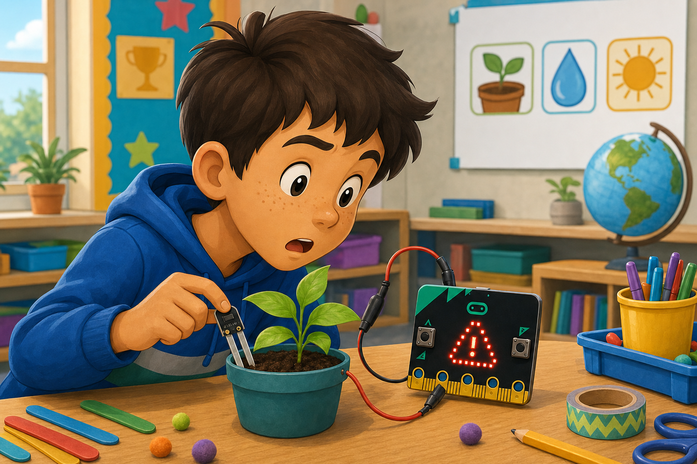

External LED
DetectButton A is pressed
→
DecideLight should turn on
→
DoSend power to a pin
The gold edge connector pins let your micro:bit talk to extra circuits and parts.
Some pins can read sensors, buttons, or dials. Pins can also turn things on and off.
Use the pins with LEDs, buzzers, motors, sensors, and your own strange inventions.

from microbit import *
while True:
pin0.write_digital(button_a.is_pressed())
if pin1.read_analog() > 600:
display.show(Image.YES)basic.forever(function () {
if (input.buttonIsPressed(Button.A)) {
pins.digitalWritePin(DigitalPin.P0, 1)
} else {
pins.digitalWritePin(DigitalPin.P0, 0)
}
if (pins.analogReadPin(AnalogPin.P1) > 600) {
basic.showIcon(IconNames.Yes)
}
})GND too. Use write_digital() for on/off parts and read_analog() for sensors that give changing values.